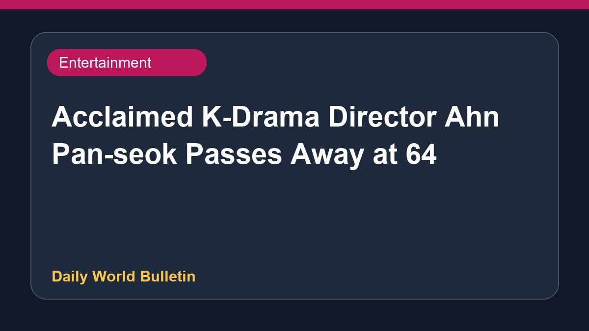

Acclaimed K-Drama Director Ahn Pan-seok Passes Away at 64

Legendary South Korean television director Ahn Pan-seok has passed away at the age of 64. Known for his work on acclaimed dramas such as Behind The White Tower, his death has led to widespread mourning within the entertainment industry. Colleagues and actors, including Kim Myung-min, Kim Hye-eun, and Kim Hye-soo, have expressed their deep sorrow and paid tribute to his remarkable directorial legacy. Details regarding his passing and the cause of death have been noted across various entertainment reports.
Original source: Entertainment Sources
Legendary K-Drama Director Ahn Pan Seok Passes Away - Koreaboo ↗
Legendary K-Drama Director Ahn Pan Seok Passes Away - Koreaboo ↗